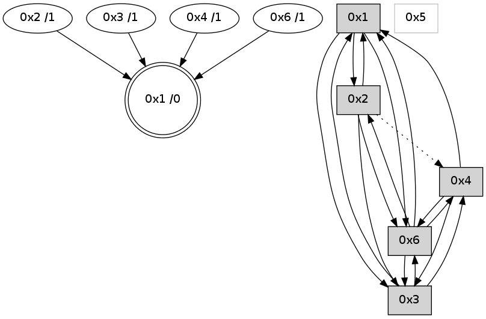

>> << IDX [start] -100 -25 -5 +0 +5 +25 +100 [660.066678047]
 Previous packets
----------------------------------------------------------------------
655.145600 beacon01(adaf) #0 coord=01,02,05,03,04,06 cycle=432.0ms assoc
-- color-indic=0 64 96 71
655.165562 beacon05(adaf) #0 coord=01,02,05,03,04,06 cycle=432.0ms assoc 64 61 a4
655.195562 beacon06(adaf) #0 coord=01,02,05,03,04,06 cycle=432.0ms assoc 64 2f b6
655.207022 [Hello(3): seq=455 sym=4,2,1,6 sysInfo= stat=4:3,0,2,0/2:0,0,2,0/1:8,0,5,0/6:12,0,2,0]
655.210952 [Hello(6): seq=371 sym=3,4,1 sysInfo=hasWarning stat=3:11,0,2,0/4:2,0,1,0/1:12,0,6,0]
----------------------------------------------------------------------
655.637708 beacon01(adaf) #0 coord=01,02,05,03,04,06 cycle=432.0ms assoc
-- color-indic=0 64 ee dc
655.647669 beacon02(adaf) #0 coord=01,02,05,03,04,06 cycle=432.0ms assoc 64 bf 23
655.657669 beacon05(adaf) #0 coord=01,02,05,03,04,06 cycle=432.0ms assoc 64 19 09
655.667670 beacon03(adaf) #0 coord=01,02,05,03,04,06 cycle=432.0ms assoc 64 85 2d
655.677670 beacon04(adaf) #0 coord=01,02,05,03,04,06 cycle=432.0ms assoc 64 23 07
655.687670 beacon06(adaf) #0 coord=01,02,05,03,04,06 cycle=432.0ms assoc 64 57 1b
655.699373 [Hello(4): seq=457 sym=6,3,1,2 sysInfo= stat=6:9,0,2,0/3:1,0,1,0/1:5,0,5,0/2:1,0,2,0]
655.707717 [Hello(1): seq=356 sym=2,4,3,6 sysInfo= stat=2:12,0,4,0/4:1,0,2,0/3:2,0,1,0/6:1,0,3,0]
----------------------------------------------------------------------
656.129815 beacon01(adaf) #0 coord=01,02,05,03,04,06 cycle=432.0ms assoc
-- color-indic=0 64 2a b3
656.139776 beacon02(adaf) #0 coord=01,02,05,03,04,06 cycle=432.0ms assoc 64 7b 4c
656.149777 beacon05(adaf) #0 coord=01,02,05,03,04,06 cycle=432.0ms assoc 64 dd 66
656.159778 beacon03(adaf) #0 coord=01,02,05,03,04,06 cycle=432.0ms assoc 64 41 42
656.169777 beacon04(adaf) #0 coord=01,02,05,03,04,06 cycle=432.0ms assoc 64 e7 68
656.179777 beacon06(adaf) #0 coord=01,02,05,03,04,06 cycle=432.0ms assoc 64 93 74
656.191106 [STC(1) #0.7 to-color d=0]
656.195116 [Hello(6): seq=372 sym=3,4,1,2 sysInfo=hasWarning stat=3:11,0,2,0/4:2,0,1,0/1:13,0,6,0/2:0,0,0,0]
656.200556 [Hello(3): seq=456 sym=4,1,6 sysInfo= stat=4:4,0,2,0/1:9,0,5,0/6:13,0,2,0]
----------------------------------------------------------------------
656.621923 beacon01(adaf) #0 coord=01,02,05,03,04,06 cycle=432.0ms assoc
-- color-indic=0 64 66 03
656.631884 beacon02(adaf) #0 coord=01,02,05,03,04,06 cycle=432.0ms assoc 64 37 fc
656.641885 beacon05(adaf) #0 coord=01,02,05,03,04,06 cycle=432.0ms assoc 64 91 d6
656.651885 beacon03(adaf) #0 coord=01,02,05,03,04,06 cycle=432.0ms assoc 64 0d f2
656.661886 beacon04(adaf) #0 coord=01,02,05,03,04,06 cycle=432.0ms assoc 64 ab d8
656.671884 beacon06(adaf) #0 coord=01,02,05,03,04,06 cycle=432.0ms assoc 64 df c4
656.683810 [Hello(4): seq=458 sym=6,3,1,2 sysInfo= stat=6:10,0,2,0/3:2,0,1,0/1:6,0,6,0/2:1,0,2,0]
656.686943 [STC(4)->1 #0.7 to-color d=1]
656.690015 [Hello(1): seq=357 sym=2,4,3,6 sysInfo= stat=2:12,0,4,0/4:1,0,2,0/3:3,0,1,0/6:2,0,3,0]
----------------------------------------------------------------------
657.114032 beacon01(adaf) #0 coord=01,02,05,03,04,06 cycle=432.0ms assoc
-- color-indic=0 64 a2 6c
657.123993 beacon02(adaf) #0 coord=01,02,05,03,04,06 cycle=432.0ms assoc 64 f3 93
657.133993 beacon05(adaf) #0 coord=01,02,05,03,04,06 cycle=432.0ms assoc 64 55 b9
657.143993 beacon03(adaf) #0 coord=01,02,05,03,04,06 cycle=432.0ms assoc 64 c9 9d
657.153994 beacon04(adaf) #0 coord=01,02,05,03,04,06 cycle=432.0ms assoc 64 6f b7
657.163995 beacon06(adaf) #0 coord=01,02,05,03,04,06 cycle=432.0ms assoc 64 1b ab
657.175659 [Hello(3): seq=457 sym=4,1,6 sysInfo= stat=4:5,0,3,0/1:10,0,5,0/6:13,0,2,0]
----------------------------------------------------------------------
657.606139 beacon01(adaf) #0 coord=01,02,05,03,04,06 cycle=432.0ms assoc
-- color-indic=0 64 ef 6b
657.616100 beacon02(adaf) #0 coord=01,02,05,03,04,06 cycle=432.0ms assoc 64 be 94
657.626100 beacon05(adaf) #0 coord=01,02,05,03,04,06 cycle=432.0ms assoc 64 18 be
657.636102 beacon03(adaf) #0 coord=01,02,05,03,04,06 cycle=432.0ms assoc 64 84 9a
657.646101 beacon04(adaf) #0 coord=01,02,05,03,04,06 cycle=432.0ms assoc 64 22 b0
657.656103 beacon06(adaf) #0 coord=01,02,05,03,04,06 cycle=432.0ms assoc 64 56 ac
657.667832 [Hello(4): seq=459 sym=6,3,1 sysInfo= stat=6:10,0,2,0/3:3,0,1,0/1:7,0,6,0]
657.670890 [Hello(1): seq=358 sym=2,4,3,6 sysInfo= stat=2:12,0,4,0/4:1,0,2,0/3:3,0,1,0/6:3,0,3,0]
----------------------------------------------------------------------
658.098247 beacon01(adaf) #0 coord=01,02,05,03,04,06 cycle=432.0ms assoc
-- color-indic=0 64 2b 04
658.108208 beacon02(adaf) #0 coord=01,02,05,03,04,06 cycle=432.0ms assoc 64 7a fb
658.118209 beacon05(adaf) #0 coord=01,02,05,03,04,06 cycle=432.0ms assoc 64 dc d1
658.128208 beacon03(adaf) #0 coord=01,02,05,03,04,06 cycle=432.0ms assoc 64 40 f5
658.138210 beacon04(adaf) #0 coord=01,02,05,03,04,06 cycle=432.0ms assoc 64 e6 df
658.148209 beacon06(adaf) #0 coord=01,02,05,03,04,06 cycle=432.0ms assoc 64 92 c3
658.159878 [Hello(3): seq=458 sym=4,1,6 sysInfo= stat=4:5,0,3,0/1:11,0,5,0/6:13,0,2,0]
----------------------------------------------------------------------
658.590354 beacon01(adaf) #0 coord=01,02,05,03,04,06 cycle=432.0ms assoc
-- color-indic=0 64 67 b4
658.600316 beacon02(adaf) #0 coord=01,02,05,03,04,06 cycle=432.0ms assoc 64 36 4b
658.610316 beacon05(adaf) #0 coord=01,02,05,03,04,06 cycle=432.0ms assoc 64 90 61
658.620316 beacon03(adaf) #0 coord=01,02,05,03,04,06 cycle=432.0ms assoc 64 0c 45
658.630317 beacon04(adaf) #0 coord=01,02,05,03,04,06 cycle=432.0ms assoc 64 aa 6f
658.640317 beacon06(adaf) #0 coord=01,02,05,03,04,06 cycle=432.0ms assoc 64 de 73
658.652006 [Hello(4): seq=460 sym=6,3,1 sysInfo= stat=6:10,0,2,0/3:4,0,1,0/1:8,0,6,0]
658.654127 [STC(1) #0.8 to-color d=0]
----------------------------------------------------------------------
659.082463 beacon01(adaf) #0 coord=01,02,05,03,04,06 cycle=432.0ms assoc
-- color-indic=0 64 a3 db
659.092424 beacon02(adaf) #0 coord=01,02,05,03,04,06 cycle=432.0ms assoc 64 f2 24
659.102424 beacon05(adaf) #0 coord=01,02,05,03,04,06 cycle=432.0ms assoc 64 54 0e
659.112424 beacon03(adaf) #0 coord=01,02,05,03,04,06 cycle=432.0ms assoc 64 c8 2a
659.122425 beacon04(adaf) #0 coord=01,02,05,03,04,06 cycle=432.0ms assoc 64 6e 00
659.132426 beacon06(adaf) #0 coord=01,02,05,03,04,06 cycle=432.0ms assoc 64 1a 1c
659.143966 [STC(4)->1 #0.8 to-color d=1]
659.147997 [Hello(3): seq=459 sym=4,1,6 sysInfo= stat=4:6,0,3,0/1:11,0,6,0/6:13,0,2,0]
659.151668 [STC(3)->1 #0.8 to-color d=1]
659.155411 [STC(6)->1 #0.8 to-color d=1]
----------------------------------------------------------------------
659.574570 beacon01(adaf) #0 coord=01,02,05,03,04,06 cycle=432.0ms assoc
-- color-indic=0 64 fd ba
659.584531 beacon02(adaf) #0 coord=01,02,05,03,04,06 cycle=432.0ms assoc 64 ac 45
659.594531 beacon05(adaf) #0 coord=01,02,05,03,04,06 cycle=432.0ms assoc 64 0a 6f
659.604533 beacon03(adaf) #0 coord=01,02,05,03,04,06 cycle=432.0ms assoc 64 96 4b
659.614533 beacon04(adaf) #0 coord=01,02,05,03,04,06 cycle=432.0ms assoc 64 30 61
659.624532 beacon06(adaf) #0 coord=01,02,05,03,04,06 cycle=432.0ms assoc 64 44 7d
659.636217 PARSE ERROR************************
Traceback (most recent call last):
File "PacketAnalysis.py", line 167, in showOperaPacket
structPacket = OperaPacketParse.parsePacket(rawPacket)
File "../../pkg-python/HipSens/Core/OperaPacketParse.py", line 461, in parsePacket
return parseHelloMessage(data)
File "../../pkg-python/HipSens/Core/OperaPacketParse.py", line 127, in parseHelloMessage
assert struct.calcsize("H")*len(neighAddrList) == len(linkList)
AssertionError
48 1c 04 00 01 cd 00 02 02 06 06 00 03 00 01 00 53 04 00 00 00 00 4c 06 03 0a 02 05 07 08 4c 52
659.640917 [Hello(1): seq=360 sym=2,3,6 sysInfo= stat=2:12,0,5,0/3:3,0,2,0/6:5,0,4,0]